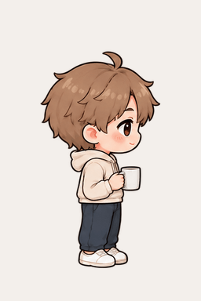
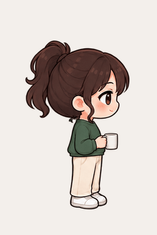
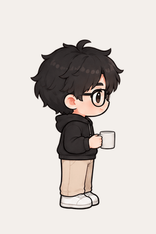
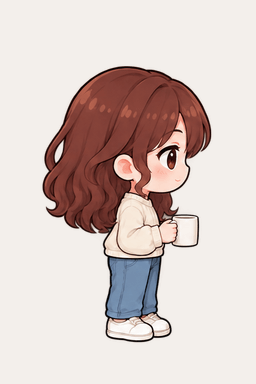
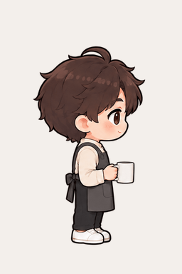
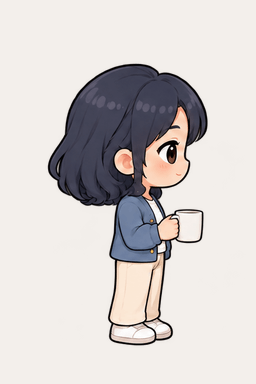

全部角色 · 喝咖啡 已接入功能分支，待实景验收
每位角色八张完整人物透明帧，展示端杯、屈肘举杯、倾杯喝一口与放下。点击“逐帧查看”可暂停、切换速度和对照独立帧。

王明
逐帧查看浅棕短发 · 米白卫衣

李研
逐帧查看马尾 · 绿色上衣

周理
逐帧查看圆框眼镜 · 黑色卫衣

陈书
逐帧查看红棕长发 · 蓝色牛仔裤

刘市
逐帧查看深灰围裙 · 米白长袖

赵审
逐帧查看前一轮样片 · 蓝色外套
六个角色的侧面帧已接入真实办公室，左侧使用镜像；仍有少量生成轮廓差异，需实景验收。正/背视图尚未绘制。当前页面仅供对照原帧。